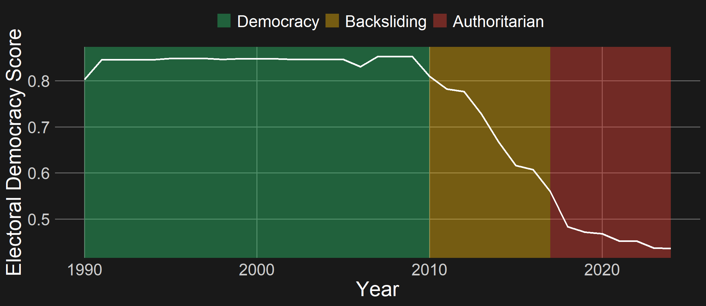
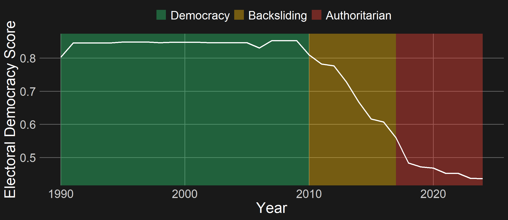
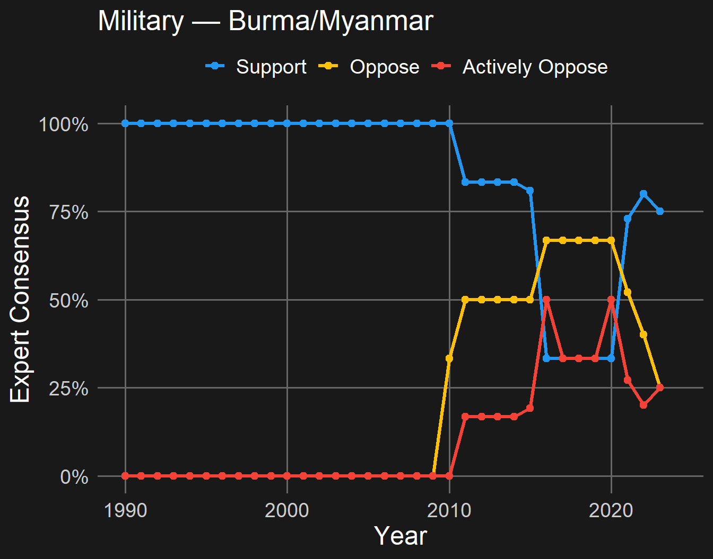
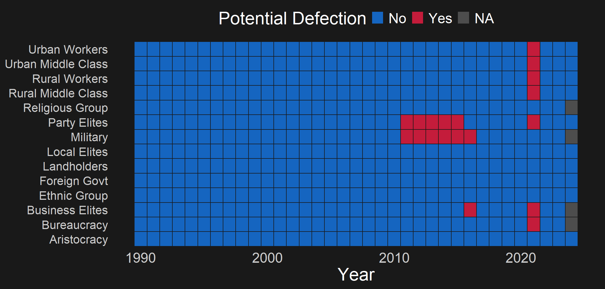
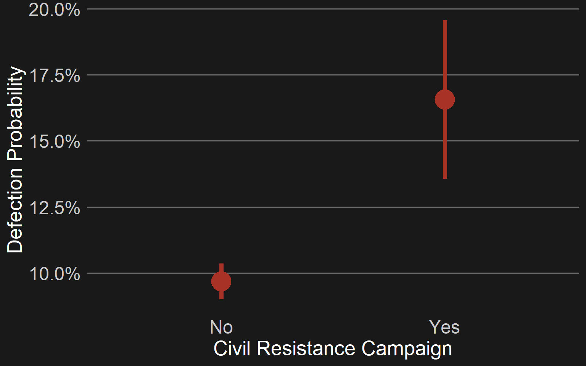

Disccussion of Two Early-Stage Resources
2026-02-20
Cross-National Defections Data
Every authoritarian and democratic backsliding regime in the post-Cold War era - 3400 country-years (Lührmann, Tannenberg, and Lindberg 2018; Lührmann and Lindberg 2019)

The regime support group-country-year
“A group of individuals who are supportive of the existing regime, and, if it were to retract support would substantially increase the chance that the regime would lose power” (Knutsen et al. 2025, 5)
The Regime Support and Opposition Groups dataset: country expert data on whether 14 groups support, oppose, or actively oppose a political regime.
Variables are measured as percentage of experts who agree that the group falls into that category
| Groups |
|---|
Aristocracy
Landholders
Party Elites
Business Elites
Bureaucracy
Military
Ethnic Group
Religious Group
Local Elites
Urban Workers
Urban Middle Class
Rural Workers
Rural Middle Class
Foreign Government

Country-years in which consensus on regime support was above a threshold in the prior year, and consensus on support falls below a threshold or opposition rises above a threshold in the current year.
Limit to variables not readily available from existing data sources
| Variable | Question |
|---|---|
| group.loyalty.unity | How united is this group in its allegiance or opposition to the regime? |
| group.loyalty.intensity | What is the highest level of opposition to the regime that you observe among this group? |
| opposition.tactics | Did the opposition engage in any intentional attempts to spark defections from this group? |
| opposition.tactics.list | What specific tactics did the opposition employ to attempt to spark defections from this group? |
| defection.tactics | What specific actions did members of this support group engage in that resisted or opposed the regime in power? |
| social.connection | How dense are the social connections between this group and the opposition? |
| vignette | Is this group in this year a good candidate for a defection case study? |
Civil resistance campaigns correlate with defections!
Defections Project — Data Resources